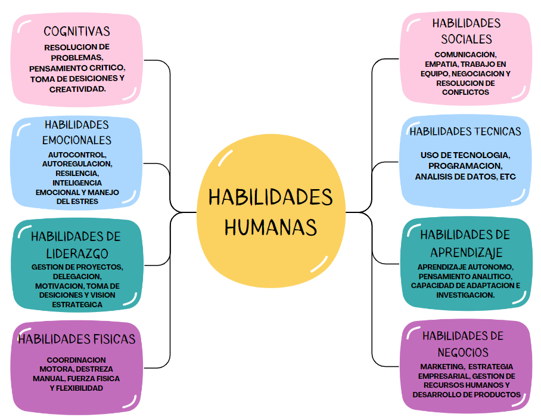

Trabajos
Habilidades Humanas
¿Que son las Habilidades Humanas?
Las habilidades humanas, también conocidas como habilidades blandas, son un conjunto
de habilidades individuales que permiten a las personas interactuar de manera efectiva
y armoniosa con los demás. Estas habilidades van más allá del conocimiento técnico y
incluyen cosas como la comunicación, la empatía, la capacidad de trabajar en equipo,
la resolución de conflictos y la gestión de emociones. Las habilidades humanas son
transversales y aplicables en una variedad de contextos y situaciones, mientras que
las habilidades técnicas están relacionadas con tareas y conocimientos específicos.
Una de las habilidades humanas más cruciales es comunicarse de manera efectiva.
Esta implica no solo la capacidad de expresarse de manera clara y concisa, sino
también la capacidad de escuchar activamente y comprender las perspectivas de los
demás. La empatía permite a las personas ponerse en el lugar de los demás, lo que
facilita la comprensión y el manejo de las emociones de los demás, lo que promueve
relaciones interpersonales saludables.
La importancia de estas habilidades en el desarrollo de proyectos complejos es un
ejemplo concreto de la carrera de ingeniería de sistemas. Un ingeniero de sistemas
no solo necesita conocimientos técnicos complejos, sino también la capacidad de
comunicar sus ideas de manera clara a otros miembros del equipo, comprender las
necesidades y preocupaciones de los usuarios finales, colaborar efectivamente con
colegas de diferentes disciplinas y manejar el estrés relacionado con los plazos
y los problemas técnicos. Incluso el ingeniero más técnicomente capacitado podría
encontrar dificultades para tener éxito en su carrera si carece de estas habilidades humanas.

Herramientas Digitales
¿Que son las Herramientas Digitales?
Los recursos digitales, que son basados en tecnología, permiten a las personas realizar
una amplia gama de tareas y actividades en los ámbitos personal, profesional y académico.
Estos recursos incluyen aplicaciones y software para dispositivos móviles, así como plataformas
en línea y servicios en la nube.
Su objetivo principal es facilitar la realización de tareas, aumentar la eficiencia y la productividad
y brindar acceso a una amplia gama de datos y servicios. Por ejemplo, pueden incluir herramientas para
la creación y edición de documentos, el diseño y la edición de imágenes y videos, la gestión de proyectos
y tareas, la comunicación a través de correo electrónico y mensajería instantánea, y la colaboración con
otros usuarios en tiempo real. Además, incluyen plataformas para el aprendizaje en línea y la investigación,
así como herramientas para el análisis de datos, la programación y el desarrollo de aplicaciones.
Las herramientas digitales son esenciales para el trabajo y el aprendizaje en la carrera de ingeniería de
sistemas. Los ingenieros de sistemas, por ejemplo, escriben, depuran y prueban código con entornos de
desarrollo integrado (IDE) como Visual Studio o Eclipse. Funcionalidades como resaltado de sintaxis,
autocompletado de código y herramientas de depuración facilitan el proceso de programación con estas herramientas digitales.
Herramientas de Calidad
¿Que son las herramientas de calidad?
Las herramientas de calidad son estrategias y métodos para administrar y mejorar
la calidad de los productos y procesos. Estas herramientas facilitan la identificación
de problemas, la evaluación del desempeño y la implementación de cambios para cumplir
con los estándares de calidad y satisfacer las expectativas de los clientes.
Las herramientas de calidad incluyen técnicas estadísticas y analíticas así como enfoques
de gestión de procesos más prácticos. Estas herramientas ayudan a encontrar áreas
problemáticas, evaluar la eficacia de las soluciones implementadas y asegurarse de que los
bienes o servicios que se entregan sean consistentes y de alta calidad.
Desde el diseño y desarrollo hasta la producción y el mantenimiento, estas herramientas son
cruciales en todas las etapas del ciclo de vida de un producto o servicio. Las organizaciones
pueden cumplir con los requisitos regulatorios y estándares de la industria al implementarlo,
lo que contribuye a la mejora continua, la eficiencia operativa y la satisfacción del cliente.
Un ejemplo de cómo se utilizan las herramientas de calidad en la carrera de ingeniería de
sistemas es durante el desarrollo de software. La prueba de software es una de las herramientas
de calidad más utilizadas en este contexto.
Los ingenieros de software realizan pruebas durante el proceso de desarrollo de un sistema para
verificar que el código funciona correctamente y satisface las necesidades del cliente. Esto
incluye pruebas unitarias, que verifican componentes individuales del software, y pruebas de
integración, que verifican que varios módulos del sistema funcionen juntos correctamente. Además,
se pueden realizar pruebas de sistema y de aceptación para verificar que el software en su conjunto
cumple con las expectativas del usuario final.
La ética profesional
¿Cuál es el principal obejtivo de la ética profesional?
El principal objetivo de la ética profesional es establecer un marco de conducta
que guíe a las personas en su desempeño laboral, asegurándose de que actúen con
integridad, responsabilidad y respeto hacia los demás. Al adherirse a principios
fundamentales como la honestidad, la justicia y la equidad, así como al cumplir
con normas y códigos de conducta establecidos por organizaciones profesionales y
reguladoras, esta ética busca mantener altos estándares de conducta. Los profesionales
protegen la calidad e integridad de su propio trabajo y fomentan la confianza pública
en la profesión en general al seguir estos principios. Esto resulta en prácticas
laborales justas y transparentes, gestión adecuada de conflictos de interés y respeto
por los derechos y el bienestar de los clientes, colegas y la sociedad en general.
En esencia, la ética profesional promueve un entorno en el que se valoren y practiquen
valores fundamentales, asegurando que las decisiones y acciones se lleven a cabo con el
máximo nivel de competencia y responsabilidad, lo que contribuye a la reputación y
credibilidad de la profesión.
......
......